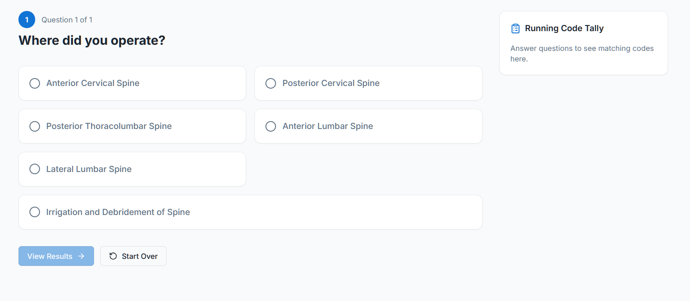
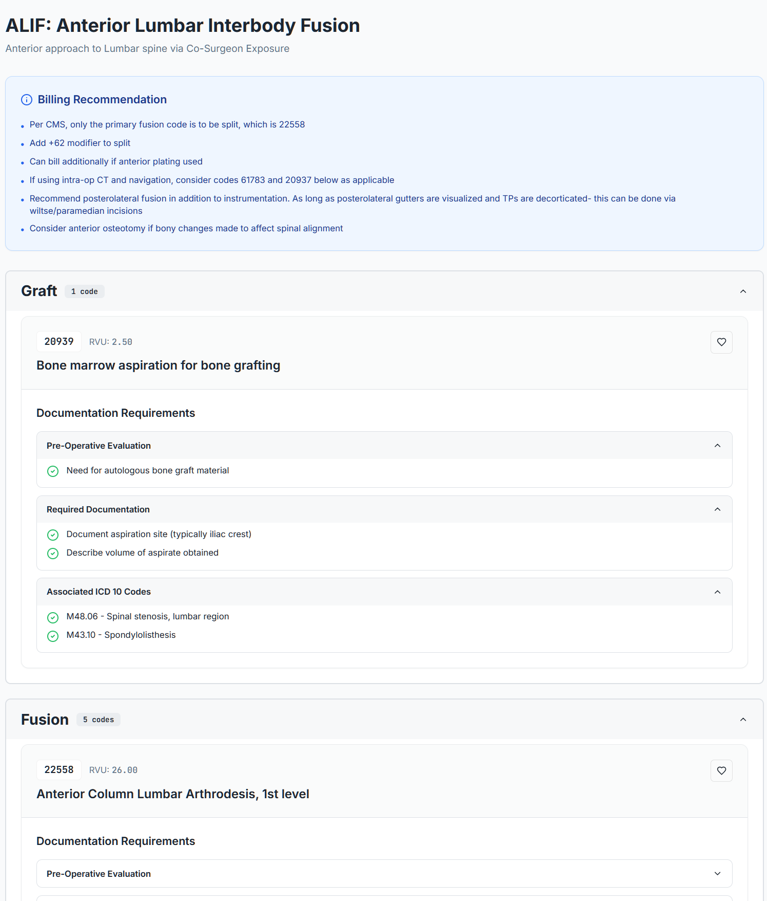

Procedure guidance
Guide clinicians through the case logic quickly so billing decisions do not depend on memory alone.
Explore the flowMedCode Pro helps surgeons and procedural teams identify billable codes, modifiers, and supporting documentation before details are lost downstream.
Start with an audit of recent cases. Our review is powered by the same MedCode Pro workflow your team can use going forward, so the audit does not just show missed revenue, it shows how the app helps prevent it.
The product guides case logic, surfaces coding recommendations, and highlights documentation support in a format clinicians can actually use.
A focused product demo with the core workflow front and center.
Missed procedure details, underused modifiers, and documentation gaps create revenue leakage that is often discovered too late.
Built as a smaller, focused landing page with the same design discipline as a premium healthcare SaaS site: clear product surfaces, restrained copy, and a single conversion path.
Guide clinicians through the case logic quickly so billing decisions do not depend on memory alone.
Explore the flowSurface CPT recommendations, add-ons, and modifier opportunities before the chart reaches downstream teams.
See the outputBring documentation requirements next to the recommendation so support language is not an afterthought.
View proofInstead of leading with cluttered screenshots, the page keeps the product surface area focused. These views show the guided question flow and the resulting billing recommendation with supporting documentation context.


MedCode Pro is meant to help procedural practices reduce missed billable detail, tighten documentation support, and give billing teams a better starting point before claims are built.
Bring reimbursable details forward before they disappear into memory gaps.
Show documentation requirements at the same moment the recommendation is made.
Give coders and billers more complete case context instead of forcing reconstruction later.
“I didn’t realize I could bill for that.”
That is the reaction the platform is built to make obvious: real revenue opportunities surfaced in time to act on them.
Position the product before the EHR and before the billing queue, where the cleanest coding decisions actually happen.
The audit gives practices a low-friction proof point, while MedCode Pro becomes the repeatable workflow that helps capture those opportunities prospectively.
We review recent cases, identify missed coding opportunities, and show how the product supports a cleaner workflow going forward.